第3讲 · 一元函数微分学的概念
据《张宇考研数学基础30讲·高等数学分册（2026版）》整理 · 覆盖原书 P146–P165
本讲导读
高等数学分册共 18 讲，本讲是一元微分学三连（概念—计算—应用）的第一环。章首点名题型：选择、填空；目标就三条——理解导数与微分的概念、理解导数与微分的关系、理解导数的几何意义。考法高度固定：用定义式凑极限、判断分段函数或含绝对值函数在一点的可导性、切线法线方程、微分概念题。张宇给的重难点提示是高阶导数计算、几何意义应用、可导充要条件应用，其中可导充要条件（单侧导数、\(|x-x_0|\varphi(x)\) 型）本讲反复敲打。本讲与第 4 讲是一体两面：这里管"导数是什么"，第 4 讲管"怎么算"，全部求导法则都建立在本讲的定义上。学法就一条：导数的三种定义式要能默写——本讲例题几乎全是"定义派"，和第 4 讲的"公式派"对照着学。
站注·真题大数据：本讲属于第一梯队考点的概念入口——可导/连续/可微关系的概念辨析选择题几乎年年以各种面目出现，"按定义求导"与"分段函数在分界点的导数"是近十五年真题里反复回潮的高频题型（新东方《考研高数历年真题大数据》）。这一讲的分数都不难拿，但丢分也最容易：一个限定词没看清，一道选择题就没了。
知识框架
先看张宇章首自己画的框架（印P146），全讲的骨架就是"一条主线、三个概念、一组关系"：
- 导数的定义（主线）
- 引例背景
- 引例 1：平均速度 \(\to\) 瞬时速度，增量比的极限（印P147）
- 引例 2：上岸故事——极限研究"能不能到"，导数研究"以多快的变化率到"（印P147）
- 三种定义式
- 增量式 \(f'(x_0)=\lim_{\Delta x\to 0}\frac{f(x_0+\Delta x)-f(x_0)}{\Delta x}\)
- 广义"狗"式：增量记号任意，分子分母严格配套
- 函数式 \(\lim_{x\to x_0}\frac{f(x)-f(x_0)}{x-x_0}\)
- 单侧导数
- 左导数 \(f'_-(x_0)\)、右导数 \(f'_+(x_0)\) 的定义
- 充要条件：\(f'(x_0)\) 存在 \(\Leftrightarrow\) 左右导数均存在且相等
- 可导与连续
- 可导 \(\Rightarrow\) 连续，反之未必（\(|x|\)、\(x^2D(x)\) 两个反例）
- 存在、连续、可导的直观图（图3-2~3-4）
- 求导保持什么、破坏什么
- 奇偶性互换：偶函数求导得奇函数，奇函数求导得偶函数
- 周期性保持：周期 \(T\) 的导函数仍以 \(T\) 为周期
- 有界性不保持：\(y=\sqrt{x}\) 反例
- 导数的几何意义
- 切线方程 \(y-y_0=f'(x_0)(x-x_0)\)、法线方程 \(y-y_0=-\frac{1}{f'(x_0)}(x-x_0)\)
- 切线存在 \(\neq\) 导数存在：角点（无切线）、无穷导数（有垂直切线但按高数规矩算不可导）
- 高阶导数
- \(f''(x_0)\)、\(f^{(n)}(x_0)\) 的极限定义（增量式与函数式）
- 连锁含义：\(f^{(n)}(x_0)\) 存在 \(\Rightarrow\) 邻域内 1~\(n-1\) 阶导数存在，且 \(f^{(n-1)}\) 在 \(x_0\) 连续
- 伏笔：极值第二充分条件的证明（第 5 讲正面用）
- 微分的概念
- 引例：正方形面积增量 \(\Delta S=2\Delta x+(\Delta x)^2\)，线性主部 + 高阶无穷小
- 定义 \(\Delta y=A\Delta x+o(\Delta x)\)，\(A\) 与 \(\Delta x\) 无关
- 可微 \(\Leftrightarrow\) 可导（充要条件），\(\mathrm{d}y=f'(x_0)\mathrm{d}x\)，\(\mathrm{d}x=\Delta x\)
- 判别可微三步；几何意义：以直代曲
- \(f(x)\) 与 \(|f(x)|\)、不可导点的鉴别
- 四条打包结论：连续的保持与不保持、\(f(x_0)\neq0\) 时可导、\(f(x_0)=0\) 按 \(f'(x_0)\) 是否为零分两路
- \(f(x)|x-a|\) 型：\(f\) 连续时 \(f(a)=0\Leftrightarrow\) 可导
- 数不可导点：分解因式，数绝对值因子里的单零点
核心概念与定理
定义3.1 导数的定义
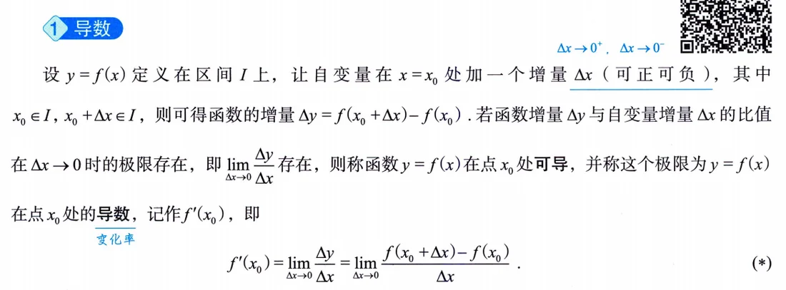
设 \(y=f(x)\) 定义在区间 \(I\) 上，\(x_0\in I\)，在 \(x_0\) 处给自变量增量 \(\Delta x\)（可正可负，只要 \(x_0+\Delta x\) 还落在定义域内），函数相应地取得增量 \(\Delta y=f(x_0+\Delta x)-f(x_0)\)。若增量比 \(\frac{\Delta y}{\Delta x}\) 在 \(\Delta x\to 0\) 时的极限存在，就称 \(f\) 在 \(x_0\) 处可导，该极限值就是导数 \(f'(x_0)\)，也叫 \(f\) 在 \(x_0\) 处的变化率。两个容易漏的限定：一是 \(\Delta x\to 0\) 的过程双侧都要顾及，二是这个极限描述的是\(x_0\) 一个点的性质，不是一段区间的。书上引例给的感觉要留住：\(a=\lim_{\Delta t\to0}\frac{f(t+\Delta t)-f(t)}{\Delta t}\) 是瞬时变化率，不是平均变化率；线性函数的变化率处处相同。一句话定位：极限研究变化趋势，导数研究变化快慢——上岸故事里，能不能上岸靠极限，以什么状态上岸靠导数。
定义3.2 导数定义的等价形式（「狗」式与函数式）
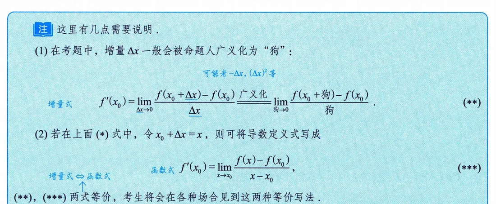
考题里的增量不一定老老实实叫 \(\Delta x\)，可能是 \(-\Delta x\)、\((\Delta x)^2\)、\(x-x_0\) 等等。张宇统一叫"狗"：只要分子是 \(f(x_0+\text{狗})-f(x_0)\)、分母恰是同一个"狗"、且狗 \(\to 0\)，极限就是 \(f'(x_0)\)。判别口诀就一句：分子分母必须严格配套——分子里进了什么增量，分母就得原封不动是它。令 \(x_0+\Delta x=x\)，又得到函数式 \(\lim_{x\to x_0}\frac{f(x)-f(x_0)}{x-x_0}\)，与增量式等价。这两个变形后面到处出现，看到任何一种写法都要能立刻认出"这是导数定义"。反过来，凑不配套的（比如分母是 \(3h\)、分子增量为 \(2h\)）要会拆项配系数再各自套定义，例3.4、习题 3.1 和自测题里都有这路题。
定义3.3 单侧导数
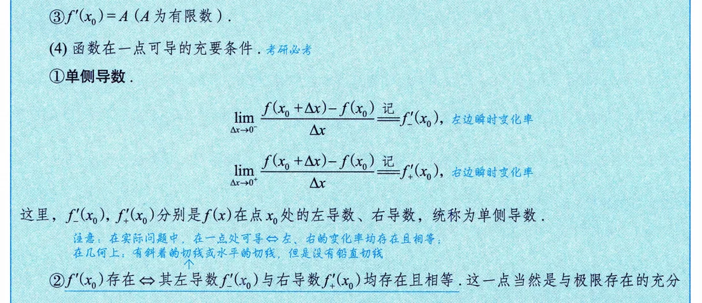
把导数定义里的极限改成单侧极限，就得到左导数与右导数：
\[ f'_-(x_0)=\lim_{\Delta x\to 0^-}\frac{f(x_0+\Delta x)-f(x_0)}{\Delta x},\qquad f'_+(x_0)=\lim_{\Delta x\to 0^+}\frac{f(x_0+\Delta x)-f(x_0)}{\Delta x}, \]
统称单侧导数。定义本身就是极限，所以一切极限工具（夹逼、等价无穷小、单侧极限存在的条件）在这里全部适用。什么场合必须拆单侧：分段函数的分界点、含绝对值的函数在绝对值零点、函数在区间端点（端点处只能谈单侧导数）。
定理3.1 可导的充要条件
\(f'(x_0)\) 存在 \(\Leftrightarrow\) \(f'_-(x_0)\)、\(f'_+(x_0)\) 都存在且相等。它没什么新东西——本质就是"极限存在 \(\Leftrightarrow\) 左右极限存在且相等"，因为导数定义就是极限问题——但它是本讲使用频率最高的定理：分段函数分界点、\(|x|\) 型零点一律走这套流程。考试陷阱也埋在这：左右导数"均存在"和"相等"是两个条件，一个不满足就不可导；\(y=|x|\) 在 0 处左右导数分别是 \(-1\)、\(1\)，存在但不等，所以不可导。
定理3.2 可导必连续，反之不真
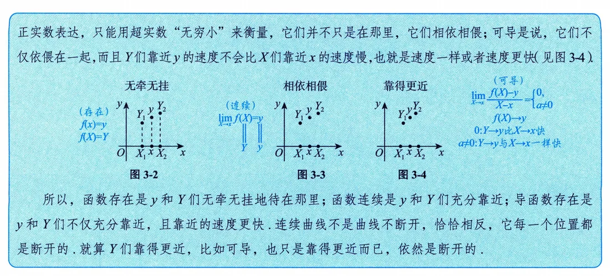
若 \(f(x)\) 在一点可导，则在该点连续；反过来不成立（印P148）。证明思路一句话：可导时 \(\lim_{\Delta x\to0}\Delta y=\lim_{\Delta x\to0}\frac{\Delta y}{\Delta x}\cdot\Delta x=f'(x_0)\cdot0=0\)，这正是连续。两个经典反例要随手能写：\(f(x)=|x|\) 在 \(x=0\) 连续但不可导；更狠的 \(f(x)=x^2D(x)\)（\(x\) 取有理数时为 \(x^2\)，无理数时为 0）在 \(x=0\) 处可导：\(f'(0)=\lim_{x\to0}\frac{x^2D(x)-0}{x}=\lim_{x\to0}xD(x)=0\)——无穷小乘有界函数仍是无穷小，夹逼出导数存在。书里用一组图（图3-2~3-4）给了直观解释：存在是 \(y\) 与 \(Y\) 们无牵无挂地待在那里；连续是充分靠近；可导是不仅靠近，靠近的速度还不比 \(x\) 慢。还有个反直觉提醒：连续曲线不是"曲线不断开"，恰恰相反，它每一个位置都是断开的——别用生活语言替代数学定义。
性质3.1 求导运算对函数性质的作用
可导函数求一次导，奇偶性互换一次：可导偶函数的导函数是奇函数，可导奇函数的导函数是偶函数；周期函数的导函数仍是同周期函数；但有界函数的导函数未必有界（例3.1 的结论，证明全部回定义硬算）。这两条性质的"变现"极其高频，书上注例（印P150）直接示范：
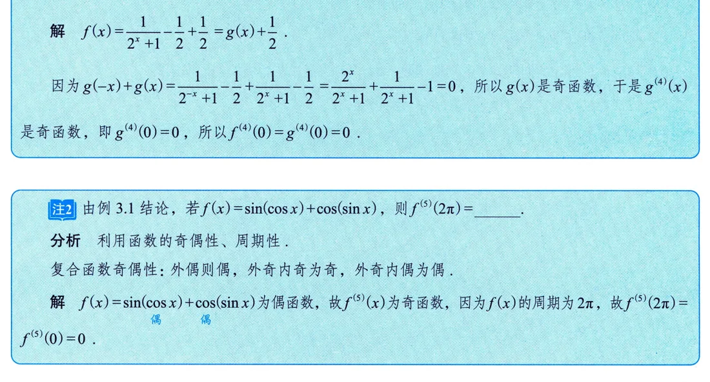
\(f(x)=\ln(1-x)-\ln(1+x)\) 是偶函数，每求导一次奇偶互换一次，所以 \(f''(x)\) 是奇函数，\(f''(0)=0\)；\(f(x)=\frac{1}{2^x+1}\) 拆成奇函数 \(g(x)\) 加常数 \(\frac12\)，求导性质只看奇函数部分，\(f^{(4)}(0)=g^{(4)}(0)=0\)。必背推论：偶函数可导则 \(f'(0)=0\)；奇函数二阶可导则 \(f''(0)=0\)。抽象函数问 \(f^{(2k)}(0)\)，第一步先查奇偶性，往往不用算就出 0。
定理3.3 f(x) 与 |f(x)| 的连续、可导关系
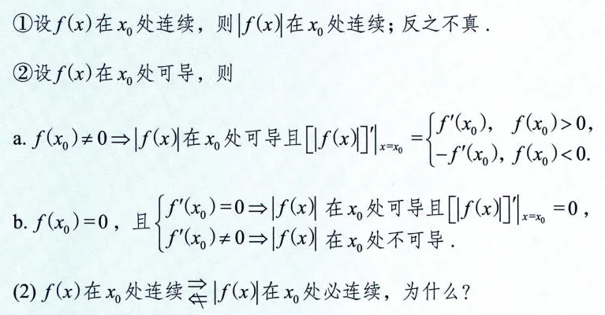
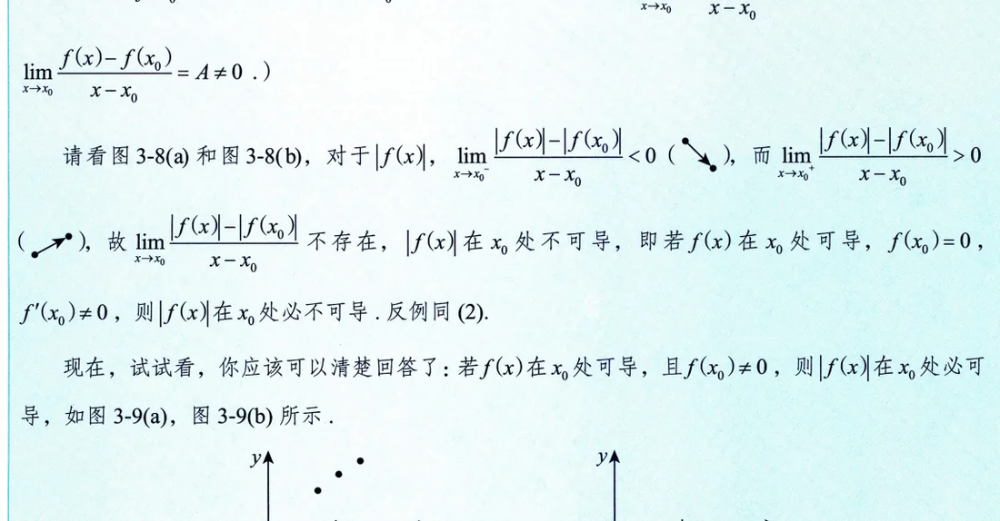
四条打包记（印P154–155）：
① 极限层面：\(\lim_{x\to x_0}f(x)=A\Rightarrow\lim_{x\to x_0}|f(x)|=|A|\)，反之不真； ② 连续层面：\(f\) 在 \(x_0\) 连续 \(\Rightarrow |f|\) 在 \(x_0\) 连续，反之不真； ③ 可导层面：\(f\) 在 \(x_0\) 可导且 \(f(x_0)\neq0\Rightarrow |f|\) 可导，且 \(|f|'(x_0)=f'(x_0)\)（\(f(x_0)>0\)）或 \(-f'(x_0)\)（\(f(x_0)<0\)）； ④ 零点处分两路：\(f(x_0)=0\) 时，\(f'(x_0)=0\Rightarrow |f|\) 可导且导数为 0；\(f'(x_0)\neq0\Rightarrow |f|\) 必不可导（左右两侧增量商一负一正，极限不存在）。
③④ 的根据都在"邻域同号"：\(f\) 连续且 \(f(x_0)\neq0\) 时，\(x_0\) 的小邻域内 \(f(x)\) 与 \(f(x_0)\) 同号，绝对值干脆可以摘掉。④ 是"取绝对值制造不可导点"的全部原理——\(f'(x_0)\neq0\) 意味着 \(f\) 在 \(x_0\) 附近单调地穿过 \(x\) 轴，一取绝对值就折出一个尖点。
定义3.4 导数的几何意义：切线与法线
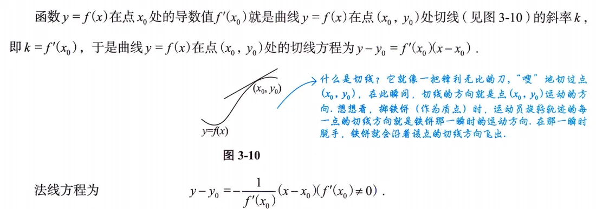
\(f'(x_0)\) 就是曲线 \(y=f(x)\) 在点 \((x_0,y_0)\) 处切线的斜率——书上讲切线的来历：割线的极限位置就是切线，导数定义里那个增量比正是割线斜率，取极限落到切线斜率上。由此：
切线方程 \(y-y_0=f'(x_0)(x-x_0)\)；法线方程 \(y-y_0=-\frac{1}{f'(x_0)}(x-x_0)\)（要求 \(f'(x_0)\neq0\)；\(f'(x_0)=0\) 时法线是竖直线 \(x=x_0\)）。写法线时先瞄一眼 \(f'(x_0)\) 是否为零，公式才合法。
注3.1 角点与无穷导数：切线与可导的边界
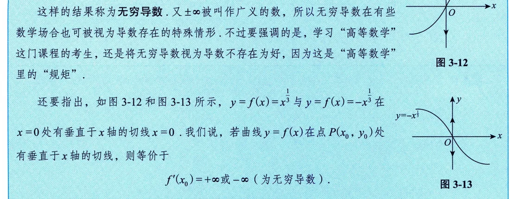
书上的注专门划清两条边界（印P156–157）：
一是"切线存在"与"导数存在"互不蕴含的两个方向：导数存在则切线存在；但切线存在不代表导数存在。二是两个注例：\(y=|x|\) 在原点处左右导数 \(k_\pm=\pm1\) 各自存在但不等（角点），无切线、不可导；\(y=x^{1/3}\) 在 \(x=0\) 处 \(\frac{\Delta y}{\Delta x}=\frac{1}{(\Delta x)^{2/3}}\to+\infty\)（左右两侧都奔 \(+\infty\)），叫无穷导数——曲线在 \(x=0\) 有垂直切线 \(x=0\)，但按高等数学的规矩，无穷导数算导数不存在。总结成两条：角点（\(f'_+\neq f'_-\)）不可导也无切线；无穷导数点有（垂直）切线但无导数。
定义3.5 高阶导数
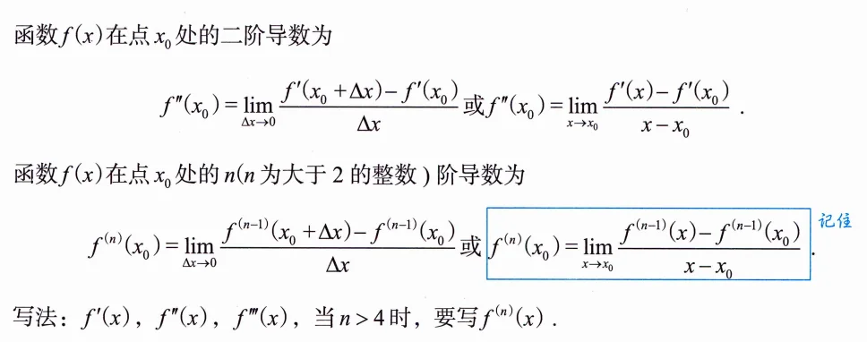
二阶导数是一阶导函数的导数：\(f''(x_0)=\lim_{\Delta x\to0}\frac{f'(x_0+\Delta x)-f'(x_0)}{\Delta x}\)，\(n\) 阶照此类推；\(n>4\) 时写成 \(f^{(n)}(x)\)。函数式版本（书上"记住"框）常用：
\[ f^{(n)}(x_0)=\lim_{x\to x_0}\frac{f^{(n-1)}(x)-f^{(n-1)}(x_0)}{x-x_0}. \]
连锁含义（易被忽略的考点）：\(f^{(n)}(x_0)\) 存在 \(\Rightarrow f(x)\) 在 \(x_0\) 的某邻域内存在 1 到 \(n-1\) 阶各阶导数，且 \(f^{(n-1)}(x)\) 在 \(x_0\) 处连续；但它不保证 \(n\) 阶导函数在 \(x_0\) 邻域内存在。书上的例3.9 是个伏笔：用这个定义配合局部保号性，能证出极值第二充分条件（\(f'(x_0)=0\)、\(f''(x_0)\neq0\) 时推出 \(f'\) 在两侧变号），第 5 讲正面开花。
定义3.6 微分的定义
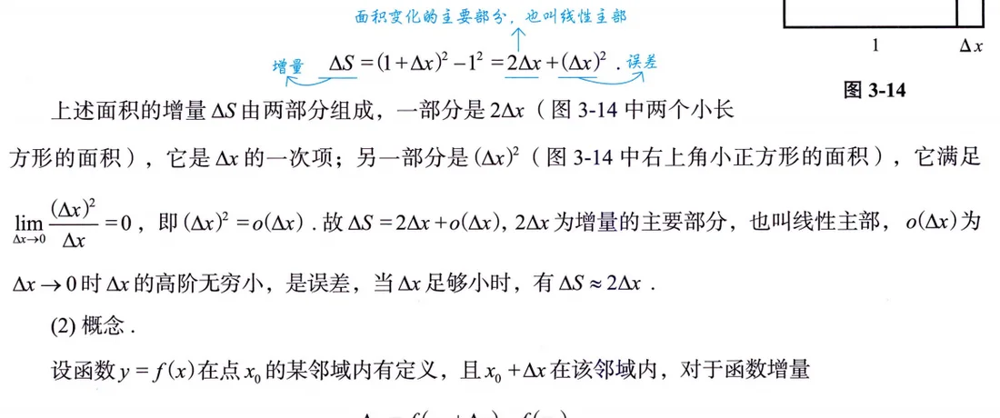
引例（印P159）：边长 1 的正方形，边长增 \(\Delta x\)，面积增量 \(\Delta S=(1+\Delta x)^2-1^2=2\Delta x+(\Delta x)^2\)，其中 \(2\Delta x\) 是线性主部，\((\Delta x)^2=o(\Delta x)\) 是误差，\(\Delta x\) 很小时 \(\Delta S\approx2\Delta x\)。一般化：若存在与 \(\Delta x\) 无关的常数 \(A\)，使得
\[ \Delta y=A\Delta x+o(\Delta x), \]
就称 \(f\) 在 \(x_0\) 处可微，线性主部 \(A\Delta x\) 叫微分，记 \(\mathrm{d}y|_{x=x_0}=A\Delta x\)。注意定义的灵魂是两件事：主部必须线性、系数 \(A\) 必须与 \(\Delta x\) 无关——"系数"里藏着 \(\Delta x\) 的候选者一律不是微分。判别可微三步（印P160注）：①写增量 \(\Delta y\)；②写线性增量 \(f'(x_0)\Delta x\)；③验证 \(\lim_{\Delta x\to0}\frac{\Delta y-f'(x_0)\Delta x}{\Delta x}=0\)。
定理3.4 可微的充要条件（可微与可导等价）
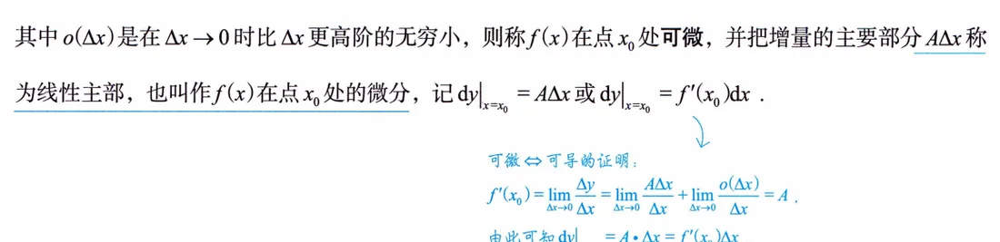
\(f\) 在 \(x_0\) 可微 \(\Leftrightarrow\) \(f\) 在 \(x_0\) 可导，且可微时 \(A=f'(x_0)\)。证明思路两行（书上蓝色小框）：可微时 \(\frac{\Delta y-A\Delta x}{\Delta x}\to0\)，即 \(\frac{\Delta y}{\Delta x}\to A\)，故可导且 \(A=f'(x_0)\)；反过来可导时 \(\frac{\Delta y}{\Delta x}=f'(x_0)+\alpha\)（\(\alpha\to0\)），移项得 \(\Delta y=f'(x_0)\Delta x+\alpha\Delta x=f'(x_0)\Delta x+o(\Delta x)\)，故可微。一元函数里可微与可导是同一件事，所以判别可微先转化为判别可导。自变量自己看自己：\(\Delta x=1\cdot\Delta x+o(\Delta x)\)，对照定义得 \(\mathrm{d}x=\Delta x\)，于是微分最终写成 \(\mathrm{d}y=f'(x_0)\mathrm{d}x\)。几何意义：点 \((x_0,y_0)\) 附近用切线段近似代替曲线段——以直代曲，这是后面一切近似计算和泰勒公式的起点。
典型例题精讲
本讲例 3.1–3.11 共 11 道，全是"定义派"，逐题收全；第 4 讲再练"公式派"。
例3.1 求导保持什么、破坏什么
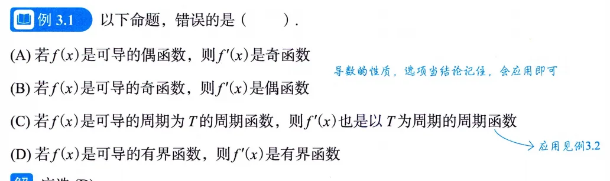
思路 A、B、C 是"求导对奇偶性、周期性的保持规律"，全部回定义硬算；D 直接找反例。 要点 算 \(f'(-x)\) 时把 \(-\Delta x\) 整体当新"狗"：可导偶函数 \(\Rightarrow f'\) 是奇函数；可导奇函数 \(\Rightarrow f'\) 是偶函数；周期 \(T\) 的函数求导后仍以 \(T\) 为周期。D 的反例：\(f(x)=\sqrt{x}\)（\(x\in(0,1]\)）有界，\(f'(x)=\frac{1}{2\sqrt{x}}\) 在 \((0,1]\) 无界，选 (D)。 注 这三条规律马上变现（印P150 注例，见上文性质3.1 处的截图）：\(f(x)=\ln(1-x)-\ln(1+x)\) 是偶函数，每求导一次奇偶互换一次，\(f''(x)\) 为奇函数，\(f''(0)=0\)；\(f(x)=\frac{1}{2^x+1}\) 拆成奇函数 \(g(x)+\frac12\)，\(f^{(4)}(0)=g^{(4)}(0)=0\)。必背推论：奇函数二阶可导则 \(f''(0)=0\)，偶函数可导则 \(f'(0)=0\)。
例3.2 奇偶 + 周期综合比大小
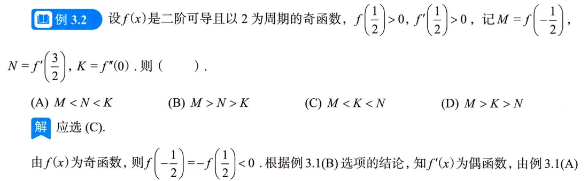
思路 把 \(M,N,K\) 全搬到同一个点（\(\tfrac12\)）附近再比，工具就是例3.1 的结论——抽象函数题，只能靠性质搬运，别想着"求出来"。 要点 \(f\) 奇 \(\Rightarrow M=f(-\tfrac12)=-f(\tfrac12)<0\)；\(f'\) 偶且以 2 为周期 \(\Rightarrow N=f'(\tfrac32)=f'(\tfrac32-2)=f'(-\tfrac12)=f'(\tfrac12)>0\)；\(f''\) 奇且存在 \(\Rightarrow K=f''(0)=0\)。三个数落位后直接比：\(M<K<N\)，选 (C)。
例3.3 抽象函数三层次：极限 → 连续 → 可导
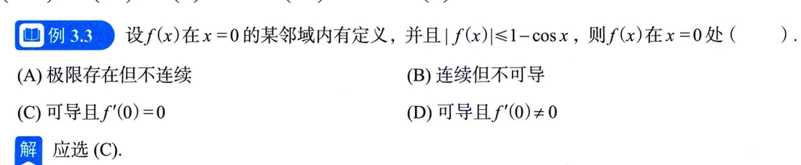
思路 只有一个不等式 \(|f(x)|\le1-\cos x\)，就从它一层层榨信息：夹逼求极限、代特殊点求函数值、再夹逼导数定义。这类"抽象函数 + 具体控制式"的题，终点几乎总是导数定义。 要点 第一层：\(0\le|f(x)|\le1-\cos x\)，\(\lim_{x\to0}(1-\cos x)=0\)，夹逼得 \(\lim_{x\to0}f(x)=0\)。第二层：代 \(x=0\)，\(|f(0)|\le0\)，故 \(f(0)=0\)，于是 \(f\) 在 0 连续。第三层： \[ 0\le\left|\frac{f(x)-f(0)}{x-0}\right|\le\frac{1-\cos x}{|x|},\qquad \lim_{x\to0}\frac{1-\cos x}{|x|}=\lim_{x\to0}\frac{x^2/2}{|x|}=0, \] 再夹逼得 \(f'(0)=0\)，选 (C)。三层榨取的顺序（极限→函数值→导数）本身就是模板，真题里换汤不换药。
例3.4 乘积函数求一点的导数
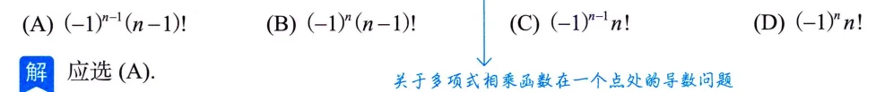
思路 \(n\) 个因子相乘，\(x=0\) 处只有 \(e^x-1\) 这一个因子为零（\(e^0-1=0\)，其余因子 \(e^0-k\neq0\)），围绕这一点做文章，别急着展开。 要点 方法一（定义）： \[ f'(0)=\lim_{x\to0}\frac{f(x)-f(0)}{x-0}=\lim_{x\to0}\frac{e^x-1}{x}\cdot\lim_{x\to0}\big[(e^{2x}-2)\cdots(e^{nx}-n)\big]=1\cdot(-1)^{n-1}(n-1)!, \] 选 (A)。方法三（拆零因子）：令 \(g(x)=(e^{2x}-2)\cdots(e^{nx}-n)\)，\(f=(e^x-1)g\)，则 \(f'(x)=e^xg(x)+(e^x-1)g'(x)\)，代 \(x=0\)，第二项因子 \(e^0-1=0\) 直接消失，\(f'(0)=g(0)=(-1)^{n-1}(n-1)!\)。 注 书上明说多项相乘不建议公式法硬来。顺带必背：\((uv)'=u'v+uv'\)，\((u_1u_2u_3)'=u_1'u_2u_3+u_1u_2'u_3+u_1u_2u_3'\)——每一项"轮换地缺一个导数"。
例3.5 \(f(x)|x-a|\) 可导的充要条件
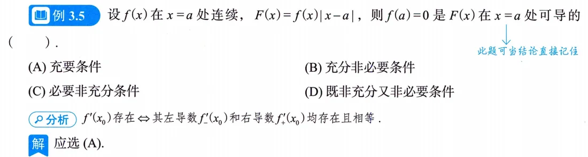
思路 写分段式，拆左右导数；\(f\) 在 \(a\) 连续保证两个单侧极限都收敛到 \(f(a)\)。 要点 \(F(x)=\begin{cases}-(x-a)f(x),&x<a,\\0,&x=a,\\(x-a)f(x),&x>a,\end{cases}\) 则 \[ F'_-(a)=\lim_{x\to a^-}\frac{-(x-a)f(x)}{x-a}=-f(a),\qquad F'_+(a)=\lim_{x\to a^+}\frac{(x-a)f(x)}{x-a}=f(a). \] 左右导数存在且相等 \(\Leftrightarrow f(a)=0\)，选 (A)。书上明说此题可当结论直接记：\(f\) 连续时 \(f(x)|x-a|\) 在 \(a\) 可导 \(\Leftrightarrow f(a)=0\)。
例3.6 数不可导点的个数
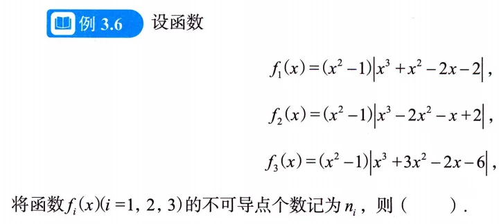
思路 例3.5 的落地版：\(\varphi\) 连续时，\(f(x)=|x-x_0|\varphi(x)\) 在 \(x_0\) 可导 \(\Leftrightarrow\varphi(x_0)=0\)。把三个函数因式分解，逐个绝对值因子检查其内部零点，再看该点处剩余因子（"系数函数"）取值是否为零。 要点 \(f_1=(x+1)(x-1)|x+\sqrt2|\,|x-\sqrt2|\,|x+1|\)，不可导点 \(x=\pm\sqrt2\)，\(n_1=2\)；\(f_2=(x+1)(x-1)|x-2|\,|x-1|\,|x+1|\)，只有 \(x=2\) 一处不可导（\(x=\pm1\) 处系数函数取值 0，照样可导），\(n_2=1\)；\(f_3=(x+1)(x-1)|x-\sqrt2|\,|x+\sqrt2|\,|x+3|\)，不可导点 \(x=-\sqrt2,\sqrt2,-3\)，\(n_3=3\)。故 \(n_2<n_1<n_3\)，选 (A)。 注 \(f_2\) 是本题的题眼：\((x-1)|x-1|\) 这种"绝对值套重根"结构在零点处可导——不可导点只数绝对值内部的单零点。
例3.7 可导函数取绝对值后的可导性
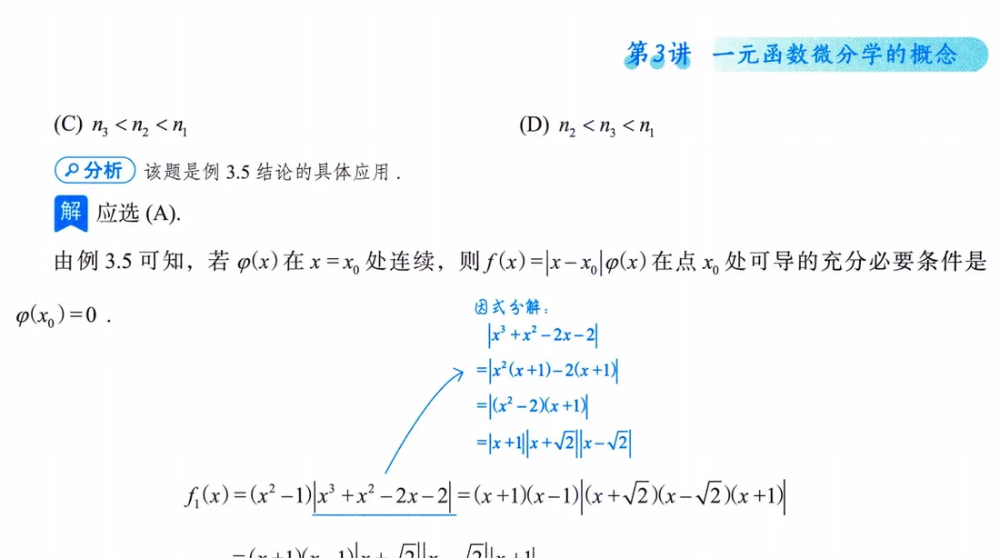
思路 设 \(f\) 在 \(x=a\) 可导，讨论 \(g(x)=|f(x)|\) 在 \(a\) 处是否可导——就是定理3.3 后半部分的现场推演，三种情形逐一走。 要点 ①\(f(a)\neq0\)：由连续性存在小邻域使 \(f\) 与 \(f(a)\) 同号，绝对值可摘（\(g=\pm f\)），\(g'(a)=\pm f'(a)\)，可导；②\(f(a)=0\) 且 \(f'(a)=0\)：\(\frac{g(x)-g(a)}{x-a}=\left|\frac{f(x)-f(a)}{x-a}\right|\to|f'(a)|=0\)，可导且导数为 0；③\(f(a)=0\) 且 \(f'(a)\neq0\)：不妨 \(f'(a)>0\)，则 \(x\) 从左侧来时 \(f(x)<0\)、增量商为 \(-\frac{f(x)}{x-a}\to-f'(a)\)，右侧为 \(+f'(a)\)，左右导数存在但不等，不可导。 注 ③就是"尖点"的来历，和定理3.3 的第④条互为印证，考试爱在 ③ 上做文章。
例3.8 切线 + 数列极限
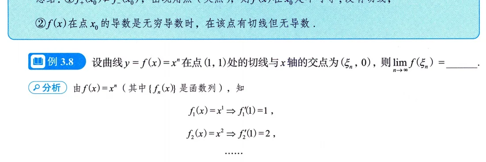
思路 几何意义开路：先写切线，求它与 \(x\) 轴交点 \(\xi_n\)，再回代 \(f\) 算极限——"几何意义 + 重要极限"的组合拳。 要点 \(f_n(x)=x^n\)，\(f'_n(1)=\left.nx^{n-1}\right|_{x=1}=n\)，过 \((1,1)\) 的切线 \(y-1=n(x-1)\)，令 \(y=0\) 得 \(\xi_n=1-\frac1n\)，于是 \[ \lim_{n\to\infty}f_n(\xi_n)=\lim_{n\to\infty}\left(1-\frac1n\right)^n=\frac1e . \]
例3.9 极值第二充分条件的铺垫
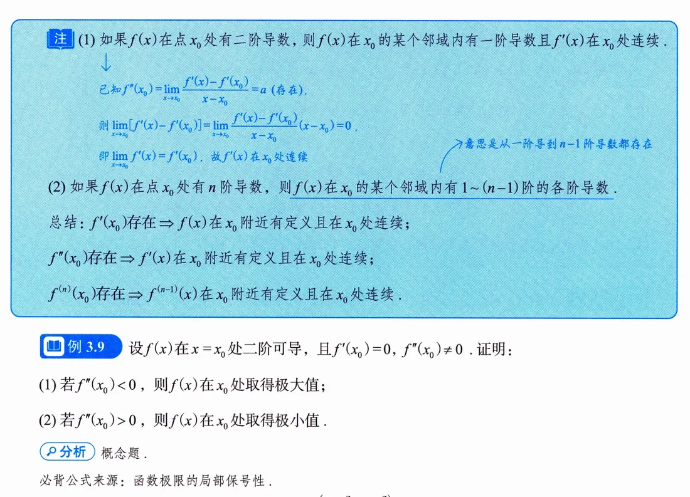
思路 设 \(f\) 在 \(x_0\) 二阶可导，\(f'(x_0)=0\)，\(f''(x_0)\neq0\)，证 \(x_0\) 是极值点。手上只有二阶导数的定义式，就从它出发配局部保号性。 要点 以 \(f''(x_0)>0\) 为例： \[ f''(x_0)=\lim_{x\to x_0}\frac{f'(x)-f'(x_0)}{x-x_0}=\lim_{x\to x_0}\frac{f'(x)}{x-x_0}>0 \] 由极限局部保号性，存在 \(x_0\) 的去心邻域使 \(\frac{f'(x)}{x-x_0}>0\)：\(x>x_0\) 时 \(f'(x)>0\)，\(x<x_0\) 时 \(f'(x)<0\)，\(f\) 先减后增，\(x_0\) 为极小值点；\(f''(x_0)<0\) 同理得极大。 注 这是高阶导数函数式定义的第一次实战，也是第 5 讲极值第二充分条件的证明本体，先在此处吃透。
例3.10 由增量表达式判别可微并求微分
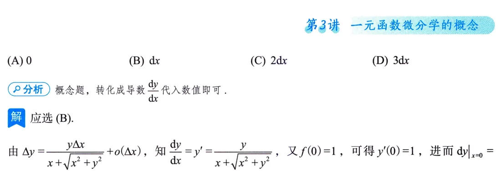
思路 给出 \(\Delta y\) 与 \(\Delta x\) 的关系式，问是否可微、求 \(\mathrm{d}y\)——按定义把 \(\Delta y\) 拆成"线性主部 + 高阶无穷小"，主部就是微分。 要点 典型结构 \(\Delta y=\frac{\Delta x}{1+\Delta x}+(\Delta x)^2\sin\frac{1}{\Delta x}\)（\(\Delta x\neq0\)；\(\Delta x=0\) 时 \(\Delta y=0\)）。先把分式展开 \(\frac{\Delta x}{1+\Delta x}=\Delta x-(\Delta x)^2+o\big((\Delta x)^2\big)\)，于是 \[ \Delta y=\Delta x+\underbrace{\left[-(\Delta x)^2+o\big((\Delta x)^2\big)+(\Delta x)^2\sin\frac{1}{\Delta x}\right]}_{=o(\Delta x)}, \] 方括号里每一项都是 \(o(\Delta x)\)（\((\Delta x)^2\sin\frac1{\Delta x}\) 是无穷小乘有界），故 \(f\) 在该点可微且 \(\mathrm{d}y=\Delta x\)。 注 这题练的就是"分离线性主部"的眼力：分式先展开、振荡项用有界性收掉，剩下的只要能证成 \(o(\Delta x)\) 就归入误差。
例3.11 微分的线性主部
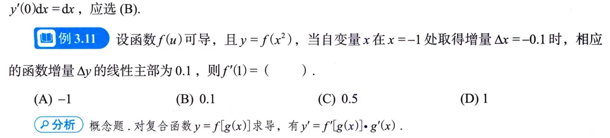
思路 "线性主部"就是 \(\mathrm{d}y\)；复合函数 \(y=f(x^2)\) 的微分要连内层一起微：\(\mathrm{d}(x^2)=2x\,\mathrm{d}x\)。 要点 \(\mathrm{d}y=f'(x^2)\,\mathrm{d}(x^2)=2xf'(x^2)\,\Delta x\)（用了 \(\mathrm{d}x=\Delta x\)，自变量的微分等于增量）。在 \(x=-1\)、\(\Delta x=-0.1\) 处给 \(\mathrm{d}y=0.1\)： \[ 0.1=2\cdot(-1)\cdot f'(1)\cdot(-0.1)=0.2\,f'(1)\ \Longrightarrow\ f'(1)=0.5 , \] 即选 \(0.5\) 对应的那个选项。 注 同页"一题一练"顺手带走：\(\lim_{\Delta x\to0}\frac{\Delta f(1)-\mathrm{d}f|_{x=1}}{\Delta x}=0\)，原理就是 \(\Delta y=\mathrm{d}y+o(\Delta x)\)，差掉的部分连 \(\Delta x\) 的一阶都不到。
易错点与技巧
- "狗"广义化（印P148）：\(\lim_{\text{狗}\to0}\frac{f(x_0+\text{狗})-f(x_0)}{\text{狗}}=f'(x_0)\)，分子分母必须严格配套。遇到 \(\frac{f(x_0+2h)-f(x_0-h)}{3h}\) 这类，插项拆成两段定义式再各自配系数（见自测题 3）。
- 可导 \(\Rightarrow\) 连续，反之不真（印P148）。判分段函数分界点两步走：先用连续性定参数，再用左右导数定义判可导。别想当然用"导函数的极限"代替导数——习题 3.7 证明 \(\lim F'(x)=A\)（存在）\(\Rightarrow\) 单侧导数 \(=A\)，但反方向不成立（\(x^2\sin\frac1x\) 的例子，印P164–165 注）。
- \(|f|\) 三条可导性结论（印P154–155）：\(f(x_0)\neq0\) 可导；\(f(x_0)=0\) 且 \(f'(x_0)=0\) 可导、导数为 0；\(f(x_0)=0\) 且 \(f'(x_0)\neq0\) 必不可导。
- 切线与导数两码事（印P156–157）：角点（如 \(|x|\) 在 0）两条单侧切线但不可导也无切线；\(x^{1/3}\) 型无穷导数，有垂直切线却按"高等数学的规矩"算不可导。写法线前先检查 \(f'(x_0)\neq0\)。
- 有界函数的导数可以无界（\(\sqrt{x}\) 反例，印P149–150）；周期函数的导数仍是同周期函数；每求导一次奇偶性互换一次——抽象函数问 \(f''(0)\)、\(f^{(4)}(0)\)，先查奇偶性，往往直接得 0。
- \(f\) 连续时 \(f(a)=0\Leftrightarrow f(x)|x-a|\) 在 \(a\) 可导（印P152，例3.5 结论）；数不可导点就数绝对值因子内部的单零点，重根处（如 \((x-1)|x-1|\)）照样可导（例3.6 的 \(f_2\)）。
- 求一点导数别条件反射上公式（印P164 习题 3.5）：\(f(x)=(x-a)\varphi(x)\) 且 \(\varphi\) 仅连续时 \(\varphi'(x)\) 未必存在，公式法直接错，必须回定义 \(f'(a)=\lim_{x\to a}\varphi(x)=\varphi(a)\)。函数不具备"导数存在"的条件时，往往只能用导数定义。
- 微分 = 线性主部 + 高阶无穷小：\(\Delta y-\mathrm{d}y=o(\Delta x)\)；可微 \(\Leftrightarrow\) 可导，判别可微先想着转化为判别可导（印P160 注）。
- 微分定义里 \(A\) 必须与 \(\Delta x\) 无关（印P160）：检验"可微"候选式时先盯系数，\(\Delta y=\frac{\Delta x}{1+\Delta x}+\cdots\) 里藏着的 \(\frac{1}{1+\Delta x}\) 不能当 \(A\)，先展开再分离（例3.10）。
- \(\mathrm{d}y=f'(x_0)\mathrm{d}x\) 是"既随 \(x_0\) 变、又随 \(\mathrm{d}x\) 变"的量（印P160–161）：例3.11 里给的是"某点某增量下的微分值"，代数前先把 \(x\)、\(\Delta x\) 的数值一起代入，别只代一半。
- 高阶导数连锁含义的方向（印P158–159）：\(f^{(n)}(x_0)\) 存在只保证邻域内 1~\(n-1\) 阶导数存在、\(f^{(n-1)}\) 在 \(x_0\) 连续，不保证 \(n\) 阶导函数在邻域内存在；选择题常拿"邻域内各阶导数都存在"当陷阱。
- 极限层面的绝对值（印P154）：\(\lim|f(x)|=|A|\) 反推 \(\lim f(x)=A\) 不成立；配合夹逼 \(|f(x)|\le g(x)\to0\) 才能得 \(f\to0\)——例3.3 第一层就是这么走的。
- 夹逼出导数的套路（印P151，例3.3）：\(0\le\left|\frac{f(x)-f(0)}{x}\right|\le\frac{控制式}{|x|}\)，右边若为 0 则 \(f'(0)=0\)；\(\frac{x^2}{|x|}\) 型要分左右算或直接记 \(\sim|x|\)。
- 切线法线题先定位点的身份（印P156–157）：点在曲线上（例3.8 型）直接套公式；题目给的点若不在曲线上，要设切点为未知数再解——别拿到点就代。
考点与方法补充（站注）
以下为站注内容，基于公开真题统计与经验贴整理，非原书文字；数学事实以原书为准。
- 考频定位（站注·真题大数据）：本讲对应真题里的一梯队概念考点——"可导/连续/可微关系"的概念辨析选择题常客，"按定义求导"（含凑定义式求极限）与"分段函数在分界点的导数"是近十五年反复出现的高频题型。题面年年换，考点就这三个（新东方《考研高数历年真题大数据》分类）。
- 题型地图（站注）：把本讲例题按真题考法归成四类——①凑定义式：给 \(f'(x_0)\) 求杂乱增量比的极限（例3.4、自测题 3）；②可导性判断：\(|x-a|\varphi(x)\) 型、分段分界点、\(f\) 与 \(|f|\)（例3.5–3.7）；③微分概念：线性主部、\(\Delta y-\mathrm{d}y=o(\Delta x)\)、由增量式判可微（例3.10–3.11）；④几何意义：切线法线方程（例3.8）。选择填空基本不出这四类。
- 与第 4 讲的衔接（站注）：本讲只管"是什么"，所有求导法则、复合/隐函数/参数方程求导、莱布尼茨高阶导数都在第 4 讲——第 4 讲是第一梯队的计算基本功核心。本讲的重难点提示里"高阶导数的计算"其主要火力其实在 L4，这里只需掌握 \(f^{(n)}(x_0)\) 的定义与连锁含义。建议本讲例题全部亲手重做一遍再进 L4，概念不清会连带 L4、L5 的题读不懂。
- 张宇方法论印证（站注）：张宇反复强调"尽快结束纯听课阶段，自己动手最重要""基础阶段把概念 + 基本计算练扎实"——本讲正是"概念"的密度峰值，11 道例题几乎全靠定义推演，眼高手低的亏在这里最明显；配套用《300题》练本讲对应习题，证明题（如习题 3.7）也不跳过。书系路线：基础阶段《基础30讲》+《300题》，强化阶段《强化36讲》+《1000题》。
- 投入产出（站注）：数学一/三卷面高数占 56%、数学二占 78%（150 分/180 分钟），而本讲概念题基本是"送分型"选择题/填空题——用两三天把三种定义式和四类题型吃透，是整本 30 讲里性价比最高的投入之一。
- 真题检验标准（站注）：至少做近十年真题；自测标准——随机抽 5 道大题独立完成、正确率 \(\ge90\)%（经验贴共识）。检验本讲是否过关的最快办法：随便翻一套近年真题的选择题，凡考"可导/连续/可微"的，30 秒内能说出考点和判定路径，就算过关。
知识清单自测
自测题
1. 设 \(f(x)=|x|^{3/2}\)（即 \(\sqrt{|x|^3}\)），\(f\) 在 \(x=0\) 处是否可导？若可导，求 \(f'(0)\)。
查看答案
解 按定义，\(f'(0)=\lim_{x\to0}\frac{|x|^{3/2}-0}{x}\)。\(x>0\) 时该式为 \(\frac{x^{3/2}}{x}=x^{1/2}\to0\)；\(x<0\) 时为 \(\frac{|x|^{3/2}}{x}=\frac{|x|^{3/2}}{-|x|}=-|x|^{1/2}\to0\)。左右极限相等且为 0，故可导且 \(f'(0)=0\)。
也可用例3.5 的结论看：\(f(x)=|x|\cdot|x|^{1/2}\)，"系数函数" \(|x|^{1/2}\) 在 0 处取值 0，故可导。
2. 设 \(f(x)\) 在 \([-2,2]\) 上连续，\(F(x)=f(x)\left|x^2-1\right|\)。\(F\) 在 \(x=1\) 与 \(x=-1\) 处可导的充要条件各是什么？
查看答案
解 \(x^2-1=(x-1)(x+1)\)，故 \(F(x)=f(x)|x-1|\cdot|x+1|\)。在 \(x=1\)：把 \(|x-1|\) 提出来，系数函数 \(\varphi(x)=f(x)|x+1|\) 在 1 处连续，可导 \(\Leftrightarrow\varphi(1)=2f(1)=0\)，即 \(f(1)=0\)。同理在 \(x=-1\)：可导 \(\Leftrightarrow\varphi(-1)=f(-1)\cdot|-2|=2f(-1)=0\)，即 \(f(-1)=0\)。
3. 设 \(f'(x_0)=2\)，求 \(\lim_{h\to0}\dfrac{f(x_0+2h)-f(x_0-h)}{3h}\)。
查看答案
解 插一项拆成两个定义式： \[ \frac{f(x_0+2h)-f(x_0-h)}{3h} =\frac{2}{3}\cdot\frac{f(x_0+2h)-f(x_0)}{2h} +\frac{1}{3}\cdot\frac{f(x_0-h)-f(x_0)}{-h}, \] \(h\to0\) 时 \(2h\to0\)、\(-h\to0\)，两处"狗"都合法，故原式 \(=\frac23 f'(x_0)+\frac13 f'(x_0)=f'(x_0)=2\)。
4. 设 \(y=f(x)\) 在 \(x_0\) 处可导且 \(f'(x_0)\neq0\)。当 \(\Delta x\to0\) 时，\(\Delta y-\mathrm{d}y\) 是 \(\mathrm{d}y\) 的什么无穷小？
查看答案
解 由微分定义 \(\Delta y-\mathrm{d}y=o(\Delta x)\)，而 \(\mathrm{d}y=f'(x_0)\Delta x\) 与 \(\Delta x\) 同阶（\(f'(x_0)\neq0\)），于是 \[ \lim_{\Delta x\to0}\frac{\Delta y-\mathrm{d}y}{\mathrm{d}y} =\lim_{\Delta x\to0}\frac{o(\Delta x)}{f'(x_0)\Delta x}=0, \] 即 \(\Delta y-\mathrm{d}y\) 是 \(\mathrm{d}y\) 的高阶无穷小（本讲习题 3.4，选 (A)）。
5. 设 \(f'(1)=3\)，求 \(\lim_{x\to0}\dfrac{f(1-2x)-f(1+x)}{2x}\)。
查看答案
解 插项 \(f(1)\) 拆成两个定义式，注意配系数： \[ \frac{f(1-2x)-f(1)}{2x}=\frac{f(1-2x)-f(1)}{-2x}\cdot(-1)\to -f'(1)=-3,\qquad \frac{f(1+x)-f(1)}{2x}=\frac{f(1+x)-f(1)}{x}\cdot\frac12\to\frac12 f'(1)=\frac32 . \] 于是 \[ \lim_{x\to0}\frac{f(1-2x)-f(1+x)}{2x}=-3-\frac32=-\frac92 . \] 负号来自 \(-2x\) 的"狗"与分母 \(2x\) 反号——这题最容易丢的就是它。
6. 设 \(f(x)=x|x|\)。写出 \(f'(x)\) 的表达式，并判断 \(f''(0)\) 是否存在。
查看答案
解 \(f(x)=\begin{cases}-x^2,&x<0,\\x^2,&x\ge0,\end{cases}\) 分段求导得 \(f'(x)=\begin{cases}-2x,&x<0,\\2x,&x>0,\end{cases}\) 又 \(f'(0)=\lim_{x\to0}\frac{x|x|}{x}=\lim_{x\to0}|x|=0\)，合并写 \(f'(x)=2|x|\)。
再按二阶导数定义：\(f''(0)=\lim_{x\to0}\frac{f'(x)-f'(0)}{x-0}=\lim_{x\to0}\frac{2|x|}{x}\)。左极限为 \(-2\)、右极限为 \(2\)，不相等，故 \(f''(0)\) 不存在——顺带印证：\(f\) 处处可导、\(f'\) 处处连续，但二阶导数在 0 处还是没有，"一阶好"推不出"二阶好"。